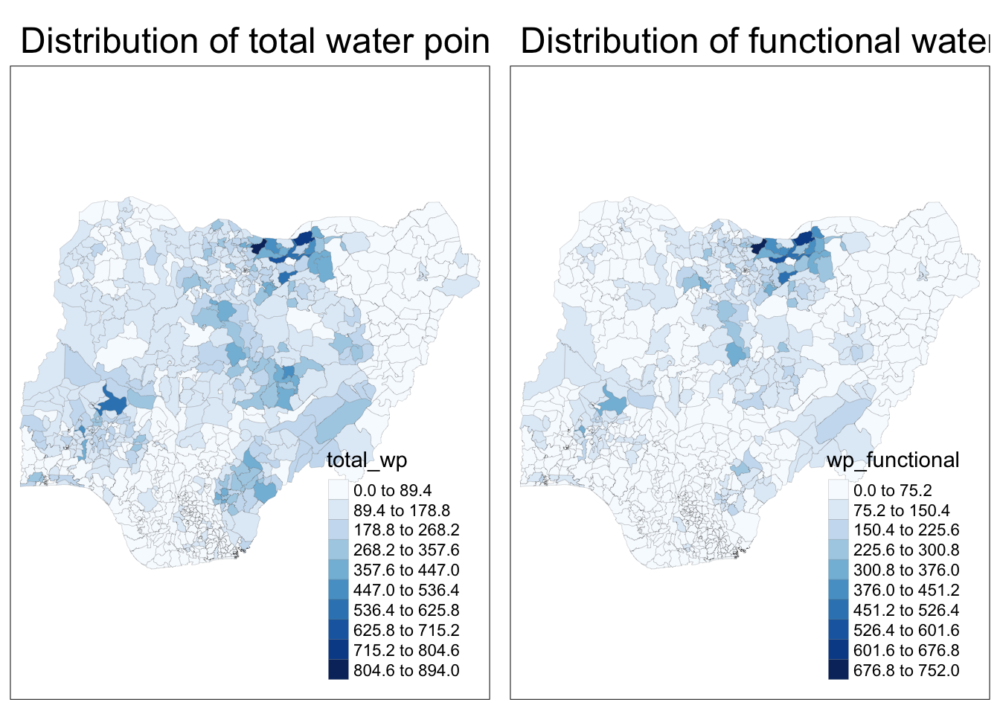
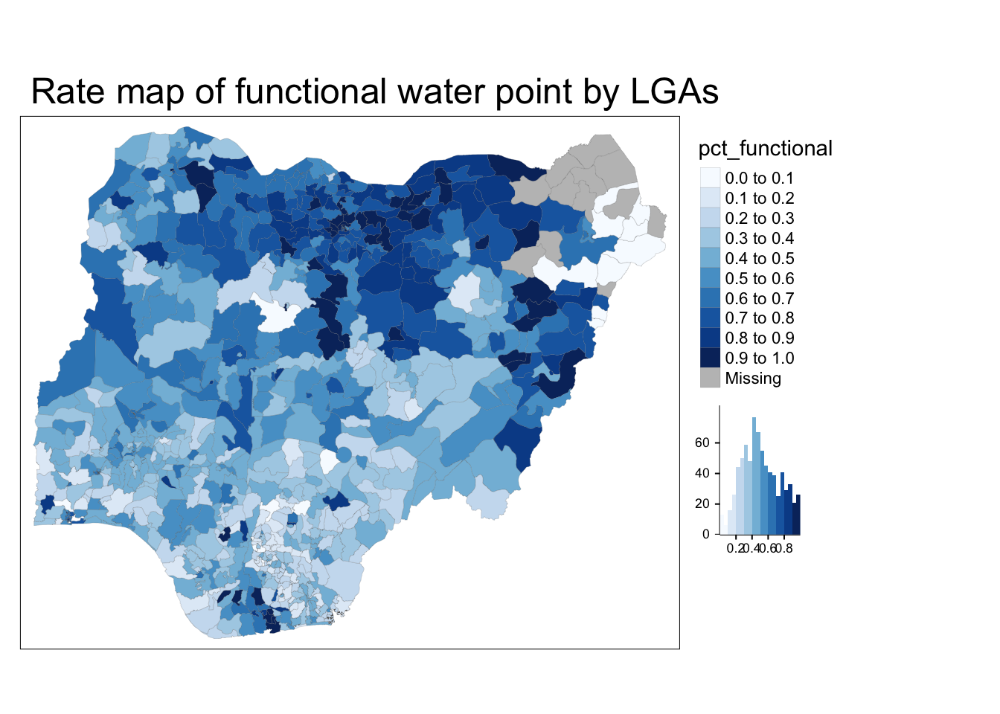

pacman::p_load(sf, tidyverse, tmap)In-class Exercise 3: Analytical Mapping
1 Installing packages
Bring data file into R
NGA_wp <- read_rds("data/rds/NGA_wp.rds")2 Visualising functional water pumps
p1<-tm_shape(NGA_wp) +
tm_fill("wp_functional",
n=10,
style="equal",
palette="Blues")+
tm_borders(lwd = 0.1,
alpha = 1) +
tm_layout(main.title= "Distribution of functional water point by LGAs", legend.outside = FALSE)3 Visualising non-functional water pumps
p2<-tm_shape(NGA_wp) +
tm_fill("total_wp",
n=10,
style="equal",
palette="Blues")+
tm_borders(lwd = 0.1,
alpha = 1) +
tm_layout(main.title= "Distribution of total water point by LGAs", legend.outside = FALSE)4 Putting the two maps together
tmap_arrange(p2, p1, nrow=1)
5 Plotting map of rate
NGA_wp <- NGA_wp |>
mutate(pct_functional=wp_functional/total_wp) |>
mutate(pct_nonfunctional=wp_nonfunctional/total_wp)tm_shape(NGA_wp) +
tm_fill("pct_functional",
n=10,
style="equal",
palette="Blues",
legend.hist = TRUE)+
tm_borders(lwd = 0.1,
alpha = 1) +
tm_layout(main.title= "Rate map of functional water point by LGAs", legend.outside = TRUE)
6 Percentile map
special type of quantile map with 6 specific categories
6.1 Data preparation
exclude records with NA
NGA_wp <- NGA_wp |>
drop_na()Creating customised classification and extracting values
percent<- c(0, .01, .1, .5, .9, .99,1)
var <- NGA_wp["pct_functional"] |>
st_set_geometry(NULL)
quantile(var[,1], percent) 0% 1% 10% 50% 90% 99% 100%
0.0000000 0.0000000 0.2169811 0.4791667 0.8611111 1.0000000 1.0000000 Create function
# creating a function to do whatever we did above so we can insert different objects to do the same thing
get.var <- function(vname, df) {
v <- df[vname] %>%
st_set_geometry(NULL)
v <- unname(v[,1])
return(v)
}Plot function
percentmap <- function(vname, df, legtitle=NA, mtitle="Percentile Map") {
percent <- c(0, .01, .1, .5, .9, .99, 1)
var <- quantile(var, percent)
bperc <- quantile(var, percent)
tm_shape(df) +
tm_polygons() +
tm_shape(df) +
tm_fill(vname,
title=legtitle,
breaks=bperc,
palette="Blues",
labels=c("< 1%", "1% - 10%", "10% - 50%", "50% - 90%", "90%- 99%", "99% - 100%")) +
tm_borders() +
tm_layout(main.title = mtitle,
title.position = c("right", "bottom"))
}